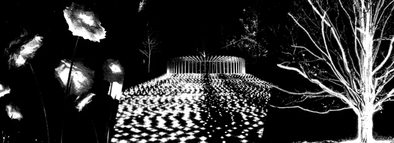
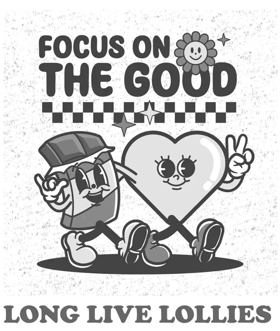

Section C from Previous Exams
On this page
- 2026 VCAA exam: Katie’s careers evening speech
- 2025 VCAA exam: Lighting the way: a new year, a new celebration
- 2024 VCAA exam: Our Local Gym: Emergency Meeting Speech by Sandy Gestalt
- 2024 VCAA sample exam: Strapleton Community Voice: Public Post by Daphne Lower
- 2023 VCAA exam: An Open Letter from the Student Music Leadership Group, Narrow Valley
- 2022 VCAA exam: Hapsey Happenings – Transcript of podcast, episode 32
Section C tasks from past VCAA English exams, laid out as they appear on the exam paper, newest first. Allow about an hour for each. The full papers are available on the VCAA website.
2026 VCAA exam: Katie’s careers evening speech
Section C – Analysis of argument and language
Instructions
- In this section, you are required to analyse the use of argument(s) and language to persuade an intended audience to share the point of view expressed in a persuasive text.
- Read the background information below and the material that follows, and write an analytical response to the task.
- For the purposes of this task, the term ‘language’ refers to written and spoken language, and ‘visuals’ refers to images and graphics.
- Your response will be assessed according to the Section C assessment criteria.
Task
Write an analysis of the ways in which arguments, written and spoken language, and visuals are used in the material below to try to persuade the intended audience to share the point of view presented.
Background information
A secondary college in a small town held its annual careers evening for students, their parents and their carers. This year, guest speakers from a range of occupations were invited to speak to the students about the possibilities for their future careers.
The final speaker, Katie, is a former student of the school and a local business owner. Her speech is provided in the following transcript, accompanied by a slide shown during her presentation and some promotional material from her business.
Hi, everyone. Thank you so much for hanging around after the previous speaker. There’s been so much presented tonight to inspire you. A career as a tradie, an office worker or in health or education could certainly be interesting or rewarding. But if you are feeling unsure, could it be because these options all feel a bit … dull? What if you could be your own boss and live your dream? That’s what I get to do every day.
Ten years ago, I was sitting in this very gym, listening to speakers talk about why I should leave our town – to travel the world, to move to the city to study or to join some big corporation. At the time, I wasn’t sure that was the right decision for me, but I took their advice and left.
And leaving did give me opportunities to gain lots of experience and skills. I enjoyed my time away working in international hospitality venues, specialising in desserts. But there was something drawing me back. I missed my home. I missed this community. I wanted to build something for myself and also to make a positive contribution to our town. And now, here I am, the proud owner of Frozen Swirl Ice Creamery on Main Street.
I chose to become a small business owner, and tonight I want to inspire you to consider what this could look like for you. Parents and carers, stay with me! I can see the sceptical looks, sighs and eye rolls. My family reacted the same way when I first told them what I wanted to do. But despite their concerns, and with lots of hard work, sacrifice and plenty of learning from my mistakes, I’ve made owning my own business a success.
So, why should you become a small business owner? Well, there are so many reasons. One of the great things about owning a small business is that you get to know the local community. Looking around tonight, I know almost all your faces. Nothing brings me more joy than seeing your smiles as you tuck into one of our latest flavours or pick up a Frozen Swirl takeaway tub to bring home to the family.
I wake up each day knowing that I’m my own boss and it’s up to me how I spend my time. I get to play with flavours from around the globe and introduce world-class ice cream to our unique town.
But the older folks in the room know that with freedom comes responsibility – it turns out running a store isn’t all sugar and sprinkles. When the shop is closed, I still have to balance the books and pay the bills. It’s full on, but I was determined to make it succeed. I know that almost one-third of small businesses fail in the first four years and I didn’t want to be one of those statistics. They say it takes a village to raise a child, and I found the same applies to a small business. Thanks to our knowledgeable community, I was able to overcome many of my challenges. Who knew that Ruby at the library was a spreadsheet wizard? Or that Mr Ali, your art teacher, could help me build my brand by whipping up my fantastic logo?
When I first opened Frozen Swirl, customers were streaming through the door – it was summer holidays, and you were all keen to grab some ice cream! But while business was booming initially, the rush of customers didn’t last. Summer ended, and you guys all went back to school. Who could have predicted that there wouldn’t be much demand for ice cream in the middle of winter!? I had to get creative. I bought a top-quality coffee machine and used some of the barista skills I learned in the city, so that even when it’s cold outside, I have something else on offer to keep customers coming in. This is another one of the rewards of small business ownership – there are always new problems to solve and opportunities to do things in a better way.
To all the young people in the audience – think carefully about what’s ahead of you. Despite my parents’ apprehension about me setting up a small business, it turned out that coming back home and opening Frozen Swirl was the right decision for me. And there’s plenty of room in our shopping strip for vibrant new local businesses. We need more entrepreneurs to shape our town’s future! So, sure, move to the big smoke and get that life experience, but don’t discount bringing back all that new knowledge and energy to enrich our town.
Finally, as you’re making your way around the stalls tonight, drop by the Frozen Swirl display for a chat. And I might just have a special offer for you.
Thanks for having me, and I’ll hand back to the principal now.
Source: VCAA 2026 VCE English examination, Section C © Victorian Curriculum and Assessment Authority. Photograph: RossHelen/Shutterstock.com. Illustration adapted from Irina Qiwi/Shutterstock.com.
2025 VCAA exam: Lighting the way: a new year, a new celebration
Section C – Analysis of argument and language
Instructions
- In this section, you are required to analyse the use of argument(s) and language to persuade an intended audience to share the point of view expressed in a persuasive text.
- Read the background information below and the material that follows, and write an analytical response to the task.
- For the purposes of this task, the term ‘language’ refers to written and spoken language, and ‘visuals’ refers to images and graphics.
- Section C is worth one-third of the total marks for the examination.
Task
Write an analysis of the ways in which arguments, written and spoken language, and visuals are used in the material below to try to persuade the intended audience to share the point of view presented.
Background information
Every year the regional town of Timberoona hosts a fireworks display to usher in the new year. This annual tradition has been an important event on the community calendar for more than 50 years. Over the past few years, however, some residents have been concerned about the impact of the event on the town and have been seeking alternative ways to celebrate New Year’s Eve.
Local resident Jack Adut submitted the following article with accompanying images to the community newsletter Timberoona: Talk of the town.
Lighting the way: a new year, a new celebration
Like most people in our community, I consider New Year’s Eve to be a highlight on my social calendar. I look forward to participating in the many festivities held in the beautiful setting of Timberoona Park. The family picnics, roaming entertainment, food vans and showcasing of local musical talent in the rotunda create the perfect backdrop for the main event: the annual fireworks display. The spectacular pyrotechnics can be viewed from vantage points across the park and beyond, with veterans of the event knowing exactly where to set up their picnic rugs and folding chairs to secure the best view. It is with great anticipation that I await the collective countdown to midnight and the first big bang that reverberates through the air!
As you can see, I’m all for the opportunity to welcome the new year with a big celebration, but it’s time to re-think the use of fireworks. It wasn’t until I saw firsthand the impact that our annual celebration has on the environment, some members of the community and their pets (not to mention the huge expense!) that I came up with a solution – a dynamic projected lightshow!
Every year the fireworks display has an environmental effect on our local area. Exploding nine tonnes of fireworks generates waste and debris that is blown into the air and lands in waterways and nature reserves, posing a threat to our native flora and fauna. The smoke created by fireworks also pollutes the air and the explosions contribute to noise pollution. Imagine how much the carbon footprint of Timberoona could be reduced if we just replace fireworks with beams of light that are non-toxic, silent and, most importantly, a cleaner option. Add to this the fact that fireworks pose a serious safety and fire risk, especially in December at the height of summer. A single mistake, a single wayward spark, can have devastating consequences. The change to a projected lightshow is a no-brainer.
I know how upsetting the loud explosions and high-pitched noises of traditional fireworks can be for little Fido or Fluffy. I understand the yearly dilemma: do I stay home with my beloved pet? Or do I go out and enjoy myself with my family and friends and hope my pet will be okay? Lights silently illuminating the buildings and landscapes in the park are the perfect solution. No more panicked pets cowering under the couch or climbing the curtains. No more scared and lost pets roaming the streets in dangerous traffic. No more frantic owners desperately searching the Timberoona Animal Shelter in the early hours of New Year’s Day. How great would that be?
A projected lightshow could also offer the chance for some residents to attend the New Year’s Eve celebrations for the first time ever. I know of many locals who experience sensitivity to loud sounds and are unable to attend the spectacle. Over the years I have seen some children covering their ears and crying in distress because of the intensity and volume of the noise. It would be wonderful to think that these children could come along to enjoy the event without the fear of being so panicked and upset.
A projected lightshow is a cheaper and smarter investment. The cost of New Year’s celebrations will drop from $1.6 million annually to $750 000. The money saved could fund more of the programs that are vital to the community, such as our meals for the homeless and our breakfast club programs. Money that would be much better spent on programs we need, rather than a single environmentally and financially disastrous event that lasts for 10 minutes.
I’ve heard criticisms of the proposal to change to a light extravaganza because of the traditional appeal of fireworks. There is much nostalgia about maintaining the old-fashioned tradition of singing ‘Auld Lang Syne’1 under a sky illuminated by colour and light with the thunderous sounds of the fireworks as backing music. Not to mention the tradition of having a romantic kiss with a loved one while feeling as if no-one else in the world is watching! Are these New Year’s Eve traditions really dependent on fireworks? Or, would this all be more spectacular without the deafening din and suffocating smoke? A lightshow offers the same ambience with so many advantages. We could have actual music that is choreographed to the movement of the lights!
Many of you attended the lightshow held in Timberoona Park earlier this year, pictured below, to celebrate Community Week, and I think you’ll agree it was incredible!

Crowds came from far and wide to listen to local musicians and DJs, and interact with the mind-bending illusions that were created with lights and projections. This event was a stunning success, proving that we can create magic in the night sky without a single explosion.
Ultimately, this decision is about balance. It’s about finding a way to celebrate that keeps the wonder of New Year’s Eve alive while also being mindful of the needs of our community members, our environment and our future.
Together, we have an opportunity to lead the way with a celebration that is spectacular, safe and sustainable.
1 ‘Auld Lang Syne’ – a song traditionally played or sung at midnight on New Year’s Eve
Source: VCAA 2025 VCE English examination, Section C © Victorian Curriculum and Assessment Authority. Dog photograph as published in the examination (adapted from Firn/Shutterstock.com).
2024 VCAA exam: Our Local Gym: Emergency Meeting Speech by Sandy Gestalt
Section C – Analysis of argument and language
Instructions
- In this section, you are required to analyse the use of argument(s) and language to persuade an intended audience to share the point of view expressed in a persuasive text.
- Read the background information below and the material that follows, and write an analytical response to the task.
- For the purposes of this task, the term ‘language’ refers to written and spoken language, and ‘visuals’ refers to images and graphics.
- Section C is worth one-third of the total marks for the examination.
Task
Write an analysis of the ways in which arguments, written and spoken language, and visuals are used in the material below to try to persuade the intended audience to share the point of view presented.
Background information
Our Local Gym is a fitness centre that caters to a local community. Until recently, the facility was supported by a council subsidy. This funding has been withdrawn and reallocated to other council projects. The Our Local Gym committee has called an emergency meeting for members of the gym to vote on a proposal to keep the facilities operating.
The chair of the Our Local Gym committee, Sandy Gestalt, presented the following speech with accompanying slides.
Thank you for attending this emergency meeting to vote on the future of Our Local Gym. We find ourselves in an uncomfortable position, but as a group of people who have worked together – worked out together – for years, we know that together we can save Our Local Gym, and ensure its future.
Before we move on to possible solutions to our situation, I want to acknowledge the history and the value of Our Local Gym to both you, our members, and to the wider community. Our Local Gym has been in operation for 47 years. We built it from scratch with council support, local fundraisers and fees from you, our members. We have, for years, been a safe space for all people, and for the young and young-at-heart. This space is where you have built your fitness, your strength and your confidence. While larger commercial gyms have flourished, they cater for a different clientele – for people who perhaps are looking for a more competitive place to achieve their fitness goals. People who flock like moths to the flame to shiny new equipment, giant flatscreen TVs, obnoxiously loud music, matching athleisure wear – and who love posting gym selfies on their socials. But Our Local Gym has never been that; we just provide an opportunity for anyone to experience success at any level of fitness. At Our Local, we value acceptance for all bodies and all fitness journeys. We train for life.
However, we have recently lost the annual council grant we have relied on for decades to keep Our Local open. As you know, we tried to appeal to the council to reverse its decision but, unfortunately, we missed the deadline and the funding has already been reallocated. The council grant was important to Our Local for two reasons: it supported the maintenance of our building and it enabled us to keep our fees low, in line with the needs and lived experience of our community.
In seeking alternative funding, we have considered a series of bleak options: raising admission costs beyond what our community (including young families, refugees and seniors) can afford; privatising the fitness centre; or closing the facility entirely and watching Our Local be demolished and turned into a carpark.
But we have found another option. A lifeline.

We have been approached by a company about the neglected shopfront on the south side of our building. This group sees real potential in the vintage, grassroots community vibe of our building.
The proposal includes an agreement that they will upgrade the shopfront at their expense, and they will pay us rent, which will cover what we have lost in the council grant. This will guarantee Our Local Gym’s low membership and admission fees, and may even leave extra funds for upgrades.
The group is Long Live Lollies.
Long Live Lollies is a popular confectionery company. You might be familiar with this brand – they sell lollies at reasonable prices in a retro-themed shop. Recently, their own lease has been terminated. This offers us a chance for a win–win situation.
Clearly, while this proposal solves our immediate financial problems, it does present challenges. Our Local Gym and Long Live Lollies do not, at first glance, share much in terms of values. Our Local offers education about nutrition and the best fuel for our bodies and supports members of the community for whom fitness can feel out of reach, while Long Live Lollies sells foods with limited nutritional benefit. There is no doubt that bringing these two businesses together in one building presents a serious clash.
Taking into account this clash of purposes – we are for community and they are for profit – I want to make it clear why we support this proposed partnership. The first is – unsurprisingly – money. Long Live Lollies have been nothing but a sweet delight to work with. They understand our dire financial position, offering us up-front rent payments that will keep the lights on and the doors open. They are keen to see our gym thrive and be part of the Our Local Gym community. So they will also pay for gym memberships for their employees – a concrete gesture that shows their support. The second: while eating lollies excessively isn’t great, the occasional treat, or sugar hit, can be a joy. At Our Local, we know that fun and laughter are as important to our health as regular exercise.
This partnership can bring colour and deliciousness to our doorstep. And so, we hope that a new community will be enticed to Our Local. Perhaps parents who don’t know we exist will take their children to buy treats from Long Live Lollies, discover us – and join up! We don’t have the advertising budget of large commercial gyms. This is an opportunity to broaden our reach by tapping in to the customer base and marketing expertise of Long Live Lollies.
Before we vote, remember that we are not just voting for ourselves. We are voting for the many who cannot attend tonight and for those we hope to reach in the future. This is the only viable solution, and we as a community understand the need for compromise. To save Our Local Gym – this wonderful place where we all get so much for our bodies and souls – we will need to bend and stretch some uncomfortable and perhaps stiff muscles. It will not be perfect but, if we can make it work, it will allow our imperfect community to flourish.
Source: VCAA 2024 VCE English examination, Section C © Victorian Curriculum and Assessment Authority. Images as published in the examination.
2024 VCAA sample exam: Strapleton Community Voice: Public Post by Daphne Lower
Section C – Analysis of argument and language
Instructions
- In this section, you are required to analyse the use of argument(s) and language to persuade an intended audience to share the point of view expressed in a persuasive text.
- Read the background information below and the material that follows, and write an analytical response to the task.
- For the purposes of this task, the term ‘language’ refers to written and spoken language, and ‘visuals’ refers to images and graphics.
- Your response will be assessed according to the Section C assessment criteria.
Task
Write an analysis of the ways in which arguments, written and spoken language, and visuals are used in the material below to try to persuade the intended audience to share the point of view presented.
Background information
The website Strapleton Community Voice has a social media page for the exclusive use of residents of the town of Strapleton. Members use Strapleton Community Voice to share information and concerns about the local area. Daphne Lower is a member of the group and created the post on the following page.
Strapleton Community Voice Public group 11,727 followers Daphne Lower 2 October at 11:35 I want to share with you a dilemma I encountered this morning as I was taking my usual stroll around our picturesque park and lovely lake area. I noticed a new sign near the water saying: DO NOT FEED THE BIRDS. Metres away from the new sign stood a man and two children busily feeding a flock of wild ducks, totally ignoring the very clear message not to do so. What should I do, if anything? This is what went through my mind … When I was growing up, we often fed wild birds. My mum had a little wooden bird feeder hanging from a tree in our front yard. Every morning, she’d lower the rope attached to the bird feeder, place a sprinkling of seed inside and carefully hoist it back up. That bird feeder attracted all sorts of beloved parrots and we would watch them, in awe of their majesty. On family trips to the beach, we’d eat hot chips and throw some to the swarm of seagulls begging at our feet. Even on the few times we ventured overseas, we saw lots of people donating scraps of their lunch to pigeons or scattering bread for the ducks at the local park. Everybody, everywhere, fed wild birds back then. Today, millions of Australians continue to feed wild birds. Why do we do it? It’s easy to see why we do it. Feeding birds feels like an act of kindness and seems to be mutually beneficial. We help the birds survive and, in return, we get enjoyment, feeling as though we are giving back to our community and connecting with the world around us. Taking time to appreciate nature is a great way to improve psychological wellbeing. In our increasingly technology-saturated world, it’s healthy and happy, even uplifting, to unplug and recharge. The duck-feeding dad probably worked pretty hard to coax his kids away from their screens in order to do something outdoors for a change. Unfortunately, despite the immense health benefits that humans gain from feeding birds, the same can’t be said for the birds! Yes, in some parts of the world, certain species of birds would not survive the long winter without humans lending a helping hand. But I wish more people understood that supplementary feeding, even though it might feel like an act of love and nurturing, is often the opposite. Giving wildlife the wrong food in the wrong amount isn’t only unhelpful, it can be downright dangerous. This is the reason I am posting today. I have read that wildlife experts agree that supplementary feeding creates an imbalance in nature that can have drastic consequences. It increases the numbers of some species and this, in turn, decreases those of other species. The rainbow lorikeet, for example, has taken great advantage of its good looks, so its numbers have soared due to supplementary feeding. Sadly, the rainbow lorikeet’s population boom has caused numbers of the much plainer scaly-breasted lorikeet to plummet. Even the most well-intentioned bird lover can upset Mother Nature without meaning to do so. Left uneaten in damp conditions, seeds and bread rot, grow mould and introduce disease to the birds. The uneaten food also attracts pests such as rats, mice and cockroaches. The more food these pests get, the more they breed.

Feeding birds is unnecessary. Native birds will be healthy and happy if left to eat only their normal diet of insects, nectar, seed or fruit. Most people don’t realise that bread — the most popular choice of food to give to wild birds — is actually one of the worst things to feed to wild birds because it contains huge quantities of sugar and salt. But should we put Strapleton’s ducks on a diet or ban bird feeding altogether? Perhaps the real problem is not so much that we are feeding wild birds, but rather that people don’t understand how often, how much and what to feed them. Seeds, duck pellets, a sprinkle of oats or a small handful of peas or corn are acceptable options. If you must feed the birds in our neighbourhood, PLEASE try to do so as an occasional treat, not as an everyday occurrence. Think of it as giving them a healthy snack, not a five-course meal! As I watched those kids and their dad endlessly lob carbs into our beautiful, clean lake, the wild ducks scrambled over one another to fight for every doughy morsel that they could stuff their beaks with. I wrestled with my conscience. I didn’t want to start a confrontation or accuse the dad and his kids of committing a crime against nature, but I desperately wanted to take them under my wing and politely explain a few choices that we can make to better care for our feathered friends. Hence my dilemma … What action would you have taken?
Source: VCAA 2024 VCE English sample examination, Section C © Victorian Curriculum and Assessment Authority.
2023 VCAA exam: An Open Letter from the Student Music Leadership Group, Narrow Valley
Section C – Analysis of argument and language
Instructions
- In this section, you are required to analyse the use of argument(s) and language to persuade an intended audience to share the point of view expressed in a persuasive text.
- Read the background information below and the material that follows, and write an analytical response to the task.
- For the purposes of this task, the term ‘language’ refers to written and spoken language, and ‘visuals’ refers to images and graphics.
- Your response will be assessed according to the Section C assessment criteria.
Task
Write an analysis of the ways in which arguments, written and spoken language, and visuals are used in the material below to try to persuade the intended audience to share the point of view presented.
Background information
The Narrow Valley region comprises small rural towns that border a large regional city. A group of young musicians who live in Narrow Valley have decided they want more opportunities to perform in their area. The group has written an open letter to the Narrow Valley community, which has been published on social media and in the local newspaper. In addition, copies have been displayed in shops and businesses. The following text is this open letter with images added by the young musicians.
An open letter to the Narrow Valley community, young and old, who wish to see our region rejuvenated … Please allow us to introduce ourselves! We are a growing group of high-school music students, teachers and mentors from the five Narrow Valley secondary colleges. We are eager to seize opportunities to bring dynamic and long-overdue changes to our region through an inclusive, youth-driven, energetic and shiny new music festival. Our festival will provide a space for all budding musicians, regardless of age and abilities, tastes and styles to come together and enjoy music. Our passion, talents and all-encompassing abilities enable us to experiment with, explore and master all types of music, including rock, pop, opera, hip-hop (to name just a few), which are all played by our various orchestras, ensembles and solo artists. We celebrate diversity in our local region and already have thousands of followers on social media, who are sharing our endeavours every day. ‘What?!’, we hear you say. ‘An unrelenting cacophony disrupting the peace and quiet of our streets? Corrupting the impressionable? Shattering windows? Driving the dogs, cats and budgerigars crazy? What type of music did you say? Another music festival? The cost? And …what about our Gorgeous Gardens Festival?’ Yes. What about our garden festival? Who doesn’t love a garden? Like music, gardens never fail to nourish the soul. However, our garden festival is tired. The number of visitors is dwindling – fast. Council data shows that the visitor numbers have dropped by 50 per cent over the past five years and it can only be expected that this trend will continue if we don’t plant some new ideas. With a decline of those proportions, the income from the festival is dwindling dangerously, too. It’s time for a change in tempo and style! For generations, the same Gorgeous Gardens organising committee has done a remarkable job of planning and hosting this event – planting and replanting – but we now need some companion planting. Consider our proposed music festival as ‘festival fertiliser’ that will re-germinate interest and energy in our regional towns, otherwise stagnation will fully set in and we will end up in the compost bin. Few music festivals enjoy the geographical advantages that our region offers. We have a natural amphitheatre overlooking the valley, which could provide not only perfect acoustics but also a stunning backdrop for performances, particularly at twilight. Imagine this cathedral-esque space with the surrounding trees lit up for an evening performance, casting light and shadow on our home-grown superstars. Imagine the sounds of melodic folk tunes wafting across the valley, of hard rock and metal exploding into the night, or the sounds of jazz sizzling under the summer sunset. Like all semi-rural areas, we have buildings that have been standing silent and empty for a long time, including old town halls that could provide brilliant spaces for lessons, workshops and jamming. Our towns can proudly boast that our spaces are accessible to people of all abilities, so musicians and audiences alike can fully enjoy the festival offerings wherever they are staged. The district’s gardens could be opened for a different purpose – not just for admiration but also for musical events. Rock with your roses or mix some Mozart among the marigolds. Dare to put some tubas with your tubers! Melodious offshoots will enrich your world! We know that our Narrow Valley region has seen some tough economic times lately and it might seem that a music festival is a frivolous waste of money. However, we see it as an opportunity to establish innovative partnerships with regional businesses – including fresh food producers, cafes and delicatessens, local artisans and artists – as one solution to overcome financial concerns. Our student bodies don’t just include musicians who can be involved but also media students, foodies, technology gurus and writers. We are confident that we can entice visitors, tourists and music lovers from far and wide to stay, eat and explore. We can see only increased prosperity for our region.

Imagine, too, how a visitor to our festival will see new musicians not in the cutthroat world of television talent shows but against the wholesome natural backdrops and the quaint historic buildings that abound in our regional towns. Visitors will eat fresh produce made into delicious meals and buy local. Visitors, residents and local businesses will all be much richer, and not just financially! We are the youth of our region. Younger voices need to be heard so that our communities can find new energy, new purpose and new perspectives. It is time for generational change. We have talents that deserve to be seen and appreciated and nurtured – and not just on social media. Let’s share our triumphs. Let’s share our aspirations. Let’s provide opportunities for all. We invite you, the residents of the Narrow Valley region, to our initial meeting, next Tuesday, in the Narrow Valley Botanical Gardens. The meeting will be followed by a performance by the Narrow Valley North College band. Please bring your ideas, your energy and even any concerns, so that we can begin our shared journey towards a new, prosperous future through our state-of-the-art music festival. Yours, in harmony, The Student Music Leadership Group, Narrow Valley
Source: VCAA 2023 VCE English examination, Section C © Victorian Curriculum and Assessment Authority.
2022 VCAA exam: Hapsey Happenings – Transcript of podcast, episode 32
Section C – Analysis of argument and language
Instructions
- In this section, you are required to analyse the use of argument(s) and language to persuade an intended audience to share the point of view expressed in a persuasive text.
- Read the background information below and the material that follows, and write an analytical response to the task.
- For the purposes of this task, the term ‘language’ refers to written and spoken language, and ‘visuals’ refers to images and graphics.
- Your response will be assessed according to the Section C assessment criteria.
Task
Write an analysis of the ways in which arguments, written and spoken language, and visuals are used in the material below to try to persuade the intended audience to share the point of view presented.
Background information
Hapsey Happenings is a podcast hosted by lifelong Hapsey resident Janelle Tanley. She discusses local events and issues, and promotes the conservation of the town’s local environment. In the most recent episode of her podcast, Tanley discusses a proposed development plan for the Hapsey Wetlands by Nature+Adventure Group, who run commercial excursions into unspoilt areas. The following text is a transcript of this episode, with images provided by Tanley.
Hello and welcome to Hapsey Happenings. I’m your host, Janelle. I’m sure all of you listening have heard about the recent development plan that has been proposed for the Hapsey Wetlands, one of the very last protected sanctuaries in this local region. Nature+Adventure Group’s plan includes bike paths, boat ramps, kiosks and cafes. The local newspaper is being flooded with letters and emails from people for and against the plan, and my socials have also been overflowing. Let’s consider our wetlands. They are quite a distance from the town, so they’re mainly visited by nature lovers – people who don’t mind a walk from where they can leave their car. The paths are narrow and unpaved. Walkers have to be careful but this means the native flora is taken care of. My friends and I frequently meet in the wetlands to relax but we talk softly without disturbing the tranquil surroundings, so the native fauna can live in peace. But now, our wetlands seem to be just another area of Hapsey under threat of destruction. In my lifetime, I have often seen people bring proposals for developments to council meetings, which are disguised as plans to protect the environment, claiming that they will provide access for people who would otherwise be unable to enjoy the natural beauty of the area. The suggestion that this proposed ‘revitalisation’ will protect the environment and preserve the magnificence of this natural space for future generations sounds like something that is said to placate those of us who want this habitat to be kept as it is. In fact, the destruction of the natural home of over 40 different species of grasses to put up money-making ventures – cafes and so on – serves the interests of humans and businesses rather than the precious environment. As locals, we are the guardians of this area. Many of us have worked tirelessly to protect these native plants and animals from all kinds of danger. We know from experience what will happen if the development plan is approved. First, Nature+Adventure Group will send in digging machinery and desecrate the home of fragile species, which will be damaged beyond repair. Then, they’ll build footpaths and bike paths. Inevitably, one careless tourist will go stomping on a delicate fern to look at a frog and will take out an entire species that is unique to our wetlands. How are we going to protect these plants, flowers, insects and other animals from human intrusion? This current development plan will only be the start. Attracting walkers, cyclists and café patrons will only give impetus to further development. With increased traffic, Nature+Adventure Group will build car parks (and charge for parking) and facilities such as toilets and gift shops. If we let this proposal through, it will set in motion a chain of proposals that will erode the protection that we have provided for the wetlands all these years. Suddenly, this area will have been concreted over, and the Hapsey Wetlands will have become the Hapsey Wetlands Shopping Centre or the Hapsey Amusement Park! If we’re looking at increasing the opportunities for outdoor adventures in the Hapsey area, there are other equally scenic and tranquil places to the south of the town, where installing walking and cycling paths would not disturb the delicately balanced ecology of the natural wetlands.

These would-be developers claim in their proposal that they have an ‘excellent record in terms of environmental responsibility’. They say that they see cycling and boating as leaving a ‘small footprint on the environment’ and as being environmentally responsible activities because these activities use no fossil fuels. They acknowledge that transporting equipment, such as bikes and boats, will leave a bit of a carbon footprint but that they are working towards reducing the impact of transporting their bikes and boats. Believe that if you like! I realise that these people feel that they are offering an excellent opportunity to the Hapsey community. They claim that they are very protective of our precious resource and that they share the goal of preserving this special place. But will an increase in the number of visitors promote the preservation of the wetlands? Will all these new visitors, grasping disposable coffee cups, share the values of those protecting the native inhabitants of the wetlands? Is the wetlands’ survival helped by people falling off bikes and out of boats? Aren’t these arguments just a selfish attempt to paint a commercial venture in a favourable light? Can we trust Nature+Adventure Group’s mission statement: ‘Above all, we acknowledge that environmental and ecological concerns are our number one priority in the expansion and development of our business’? We must consider what is best for our wonderful wetlands. I would love to hear from you, listeners of Hapsey Happenings – how do you feel about this? Leave your comments on my website. Don’t forget to follow the podcast to receive updates about the proposal for the wetlands.
Source: VCAA 2022 VCE English examination, Section C © Victorian Curriculum and Assessment Authority.